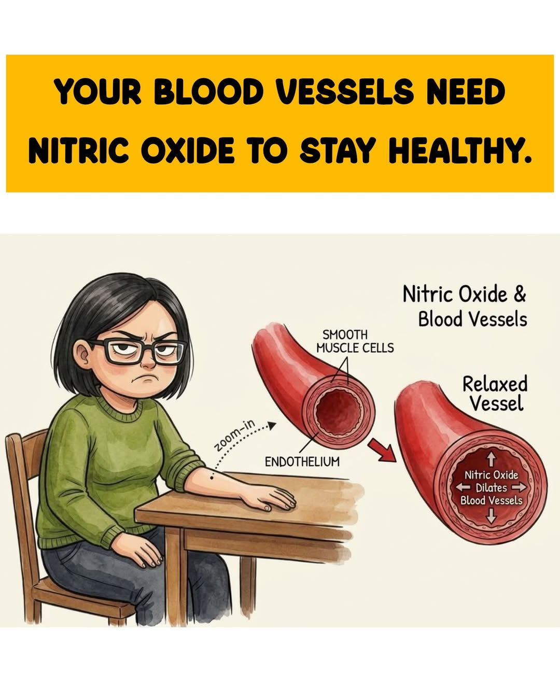

#nitricoxideHD #louisignarroHD #endotheliumHD #exerciseHD #nasalbreathingHD #nutritionHD #bloodpressureHD



Dietary nitrate from leafy greens and beets boosts nitric oxide and vessel relaxation
Louis shares an explainer on endothelial health and nitric oxide. Nitrate-rich vegetables such as beetroot, spinach, arugula and lettuce are converted to nitrite and then nitric oxide, supporting vasodilation. Research on beetroot nitrate shows improved vascular function and in some studies modest blood pressure reductions.